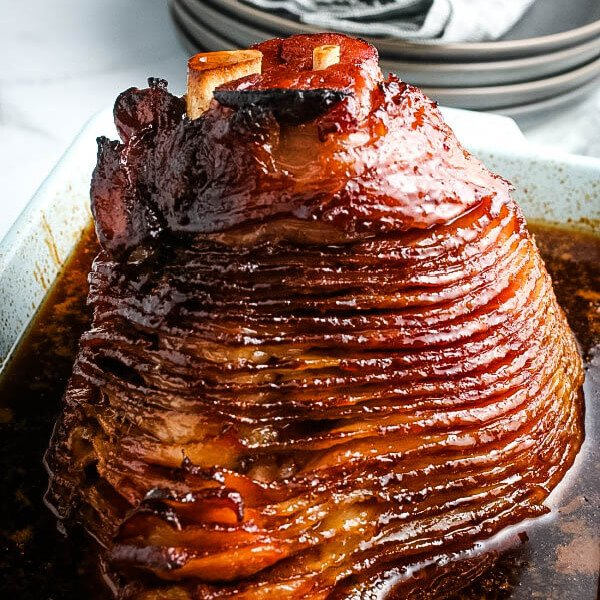

Happy Holiday Ham Recipe

This is my families all time favorite dish when it comes to any holiday. Is is honeybaked or homebaked... the table will never know!
- 6-10lb Ham
- 1/4 cup whole cloves
- 1/4 cup dark corn syrup
- 2 cups honey
- 2/3 cup butter
- Preheat oven to 325 degrees F
- Score ham and stud with whole cloves. Place ham in foil lined pan
- Over a medium high heat stovetop, heat the dark corn syrup, honey and butter for the glaze
- Brush the glaze over the ham and baked for 1 hour and 15 minure in the oven and baste every 10 to 15 minutes
- Serve and enjoy